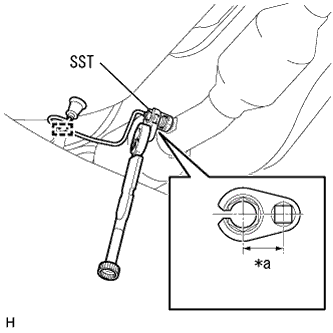

オキシジェン センサ 取り付け |
| 1. オキシジェン センサ取り付け |
|  |
SSTを使用して、オキシジェン センサを取り付ける。
| *a | 有効長 (30mm) |
参照)クランプを接続し、ハーネスを車両内側に引き入れる。
オキシジェンセンサのコネクターを接続する。
| 2. インストルメントパネルフィニッシュ パネル LWR CTR取り付け |
 |
スクリュ3本でインストルメントカップホルダを取り付ける。
パワーアウトレットソケットのコネクタを接続する。
ツメ8箇所のかん合を合わせ、クリップ<ｃ>2個でインストルメントパネルフィニッシュパネル LWR CTRを取り付ける。
| 3. バッテリマイナスターミナル接続 |